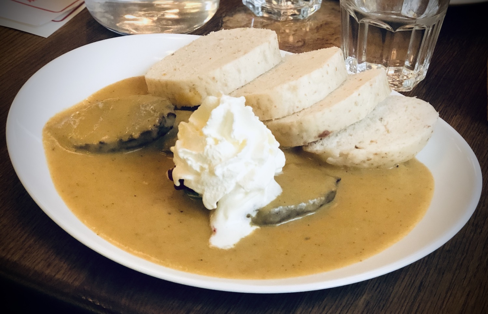

Here are some suggestions for exploring Prague.
⚠️ Please take appropriate pre-cautions regarding the COVID-19 pandemic when necessary. ⚠️For a list of honest locations to exchange money in Prague, see this blog post. If you have any additional recommendations for us to include on this list, let us know! The view from the top of the Czech Eiffel Tower.
Food near the XSF22 venue
- Chodov Westfields: Food court on the top floor with multiple cuisines, including Czech, Mexican, Thai, Indian, American, and many more. Also many good bakeries with great sandwich options outside Albert supermarket on the ground floor.
- Roztylská 2321/19, 148 00 Praha-Chodov
Note: ~15 minutes from the Astronomical Institute using the Metro or ~25 minute walk.
- Roztylská 2321/19, 148 00 Praha-Chodov
- Balounova Restaurace U Břízy: Good quality food close to the institute with some vegetarian options.
- Máma Bond Café: Only accepts cash. many vegetarian options with freshly made juices/smoothies and excellent desserts.
- Linh Tasty Asia: Thai restaurant.
- Restaurace Eureka: Traditional Czech food with limited vegetarian options.
- Roztyly bakery: Small bakery featuring a selection of Czech (and other European) cakes and sandwiches, closed at weekends.
- Tesco Expres: Small supermarket.
Restaurants in Prague
- San Carlo: Italian with very good pizza.
- Maitrea: Vegan/vegetarian with very good vegetarian Goulaš and Svičkova.
- Café Louvre: Traditional Czech and other European cuisines (also great cake).
- Café Imperial: Elaborate restaurant with Czech and other European cuisines (note more expensive).
- Indian by Nature: Very good quality Indian food.

Miscellaneous foods
- Trdelník
- Can be found in many shops around Old Town Square.
- Svičkova
- Traditional version with meat can be found in many traditional Czech restaurants. For a very good vegetarian version, see Maitrea.
- Kynuté ovocné knedlíky (fruit dumplings)
- Can be found in many traditional Czech restaurants.
- Koláč
- Can be found in many bakeries, including the bakery at Roztyly Metro station.

